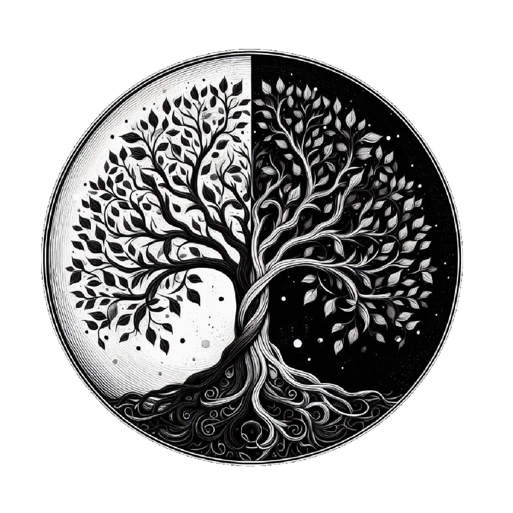

Structures dissipatives
Nous voyons un monde opaque fait de matière, mais cette apparence est factice. En réalité, le monde est entièrement fait d'énergie, et nous servons à propager cette énergie. C’est le mouvement d'expansion de l'univers qui nous a façonné, qui nous a fait évoluer et nous maintient en vie. C’est parce que le monde se déploie qu’il a intérêt à ce que nous existions, il ne nous aurait pas fait apparaître sinon. Tous les êtres vivants sont des machines à dissiper de l’énergie. Si cela est évident pour les plantes, c’est également vrai pour les animaux. Les plantes accaparent l’énergie solaire et la diffusent en énergie chimique autour d’elles à travers leur action photosynthétique. Elles assurent ainsi, parallèlement à la diminution du désordre que leur organisation moléculaire représente, une augmentation de la dispersion d’énergie, soit une augmentation de l’entropie à la surface de la Terre.
Les animaux, eux aussi, semblent en apparence résister à l’entropie, puisque leurs corps se contiennent et ne se désagrègent pas. Cependant, en se nourrissant de plantes ou en ingérant les nutriments présents dans les chairs d'autres êtres vivants qui se sont préalablement nourris de plantes, ils ingèrent à leur tour de l’énergie. Cette énergie, ils la diffusent ensuite à travers le fonctionnement de leurs organes et de leurs membres, lesquels consomment en permanence de l’énergie pour fonctionner, ce qui leur demande par la suite de se nourrir à nouveau. Ce cycle est la condition pour qu’ils se maintiennent en vie. Ils participent ainsi au mouvement de déploiement de l'énergie dans l'univers.
Ils augmentent même leur dépense d’énergie lorsqu’ils intensifient leur action, et tout processus de dissipation d’énergie entraînant une perte de chaleur, la température d’un corps s’adonnant à un exercice physique augmente donc naturellement, car la quantité d’énergie qu’il dissipe augmente.
Entropie et structures dissipatives
Les animaux sont donc, au même titre que les plantes, des structures organisées qui n’ont pour seul but que d’accaparer et dépenser de l’énergie, soit s’aligner sur le phénomène d’entropie qui se produit à la surface de la Terre, en dépit de leur ordonnancement moléculaire propre.
La famille des êtres vivants s’est scindée en deux, entre les animaux et les végétaux, mais ces deux familles ont les mêmes racines, il est donc logique que ces deux types d’êtres vivants aient la même fonction. L’origine de l’existence des animaux comme de celle des plantes est un apport d’énergie, et ils dissipent communément de l’énergie par leur action. Nous ne sommes pas des plantes, mais nous avons toujours en commun le but final que notre existence poursuit. Tout comme elles, nous prenons part au mouvement de déploiement de la substance unique de l’univers, lequel n’a pas seulement lieu par-dessus les étoiles. Nous sommes apparus grâce à une source d’énergie comme le prouve l’expérience de Miller-Urey, et nous travaillons toute notre vie à disperser cette énergie qui a uniquement pour volonté de s’étendre. Si nous ne le faisons pas, nous disparaissons, nous mourrons, nous fanons, nous nous décomposons, tout comme le fait une plante privée d’eau et plongée dans le noir. Tout être vivant n’est qu’une structure dissipative particulière assurant un processus de dissipation d’énergie, et la sélection naturelle, en conservant les patrimoines qui arrivaient le mieux à se nourrir, nous a rendus encore plus rigoureux dans notre tâche.
